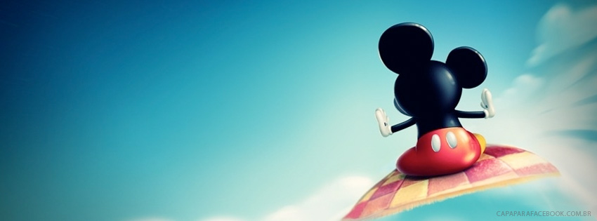

Disney

| The Walt Disney Company |
Conhecida popularmente como simplesmente Disney, é uma companhia multinacional estadunidense de mídia de massa sediada no Walt Disney Studios, em Burbank, Califórnia. É um dos maiores conglomerados de mídia e entretenimento do planeta por receita.[3][4]
A Disney foi fundada em 16 de outubro de 1923, por Walt Disney e Roy Oliver Disney com o nome de Disney Brothers Cartoon Studios e estabeleceu-se como pioneira na indústria de animação, até diversificar seus produtos para filmes em live-action, redes de televisão e parques temáticos. A companhia também operou sob o nome Walt Disney Studio e Walt Disney Productions. A empresa leva seu nome atual desde 1986, época em que expandiu suas produções para o teatro, rádio, música, publicidade e mídia online. A Disney também criou novas divisões corporativas com o objetivo de comercializar conteúdo para adultos, como a Touchstone Pictures, visto que sua marca principal, Disney, está associada a aspectos familiares e infantis.
A empresa é mais conhecida pelos seus estúdios de cinema, o Walt Disney Studios, que é hoje um dos maiores e mais conhecidos estúdios de Hollywood. A Disney também tem a propriedade e opera a rede de televisão ABC; redes de televisão por assinatura, como Disney Channel, ESPN, A+E Networks e Freeform; divisões de publicidade, de merchandising e de teatro; A companhia possui e licencia 14 parques temáticos ao redor do mundo, além de uma divisão musical de sucesso. As suas maiores aquisições foram a ABC em 1996, por 19 bilhões de dólares, a Pixar em 2006 por 7 bilhões de dólares, a Marvel Entertainment Inc. em 2009 por 4 bilhões de dólares, e em 2012 a Lucasfilm, pelo mesmo valor da Marvel.[5]
A Disney é parte do Dow Jones Industrial Average desde 6 de maio de 1991. Uma criação antiga e bastante conhecida dos desenhos animados da empresa, o Mickey Mouse, é o símbolo principal da The Walt Disney Company.